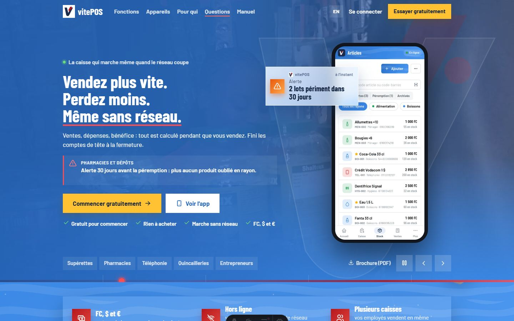
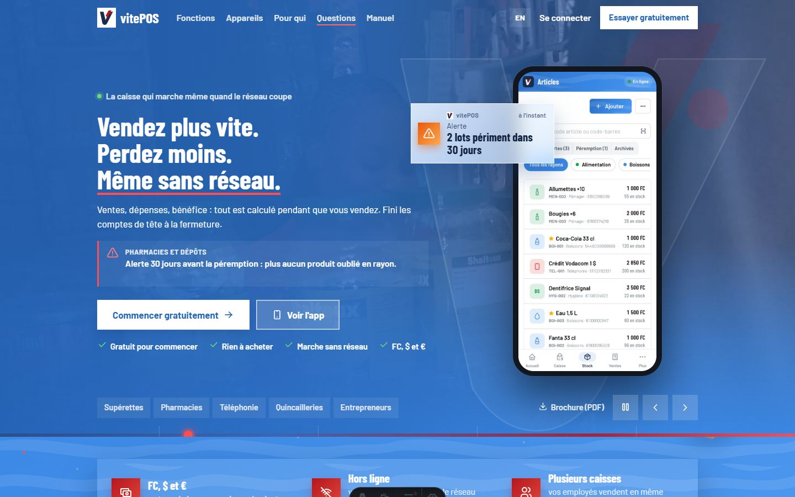
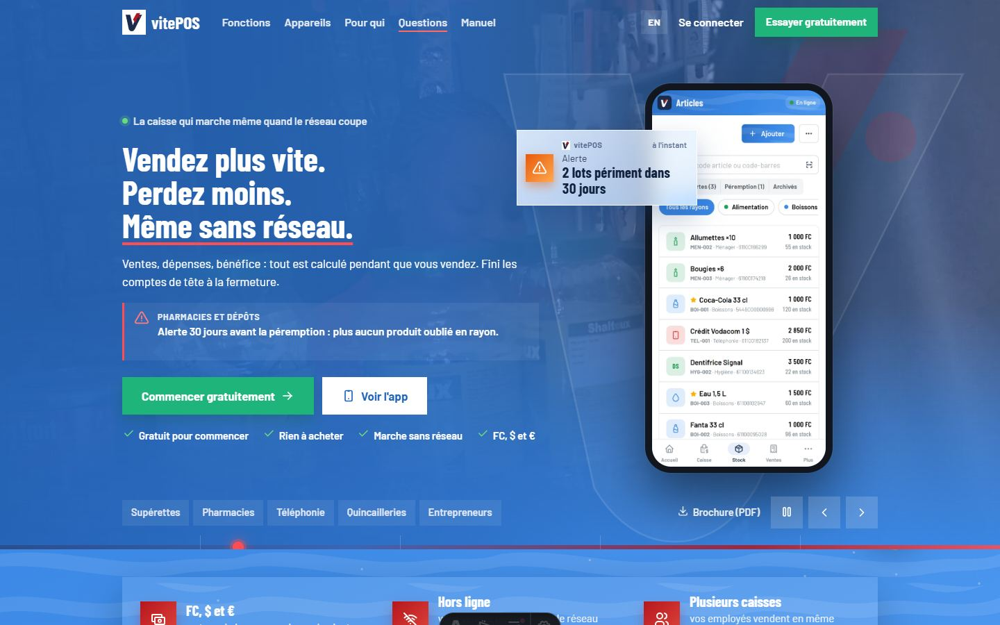
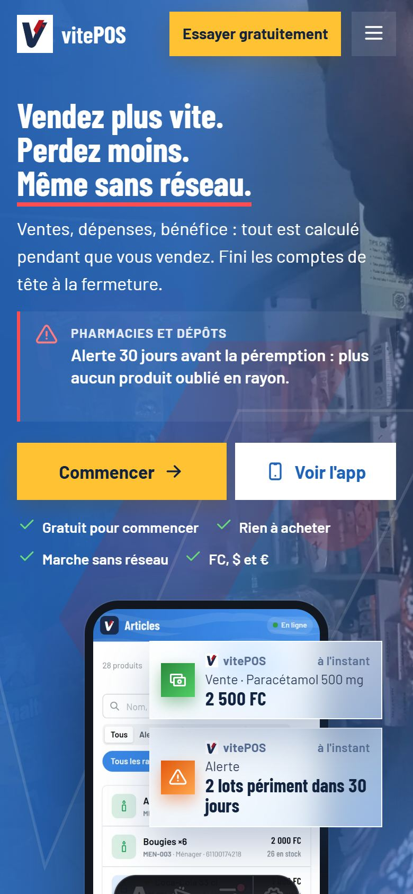
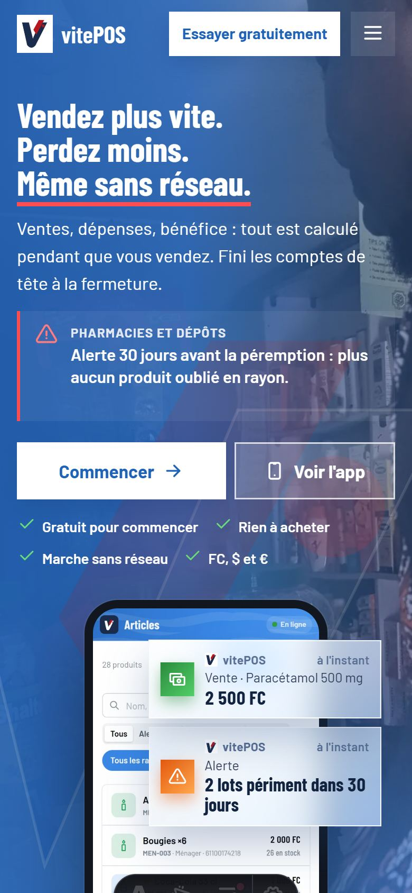
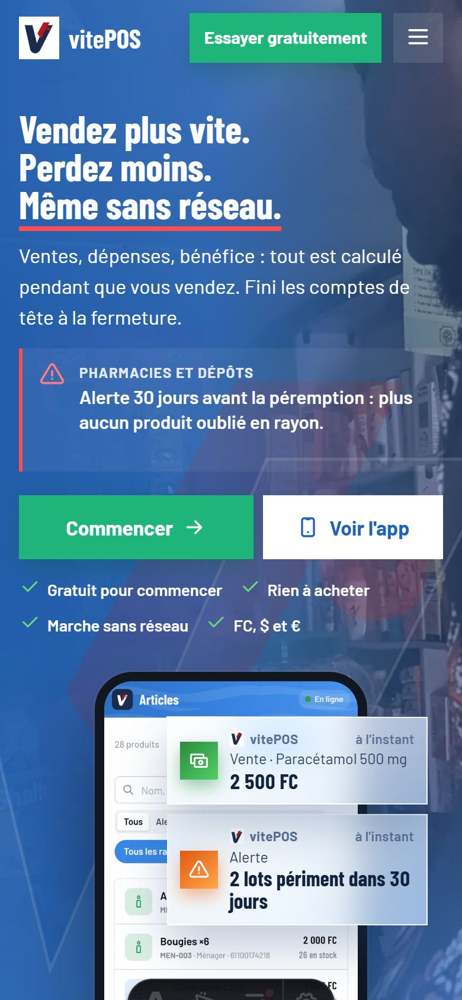

Bleu ciel zébré : site et app en harmonie
Maquettes faites sur le vrai site (rien n'est encore modifié dans le code).
Ta version : site blanc, avec le zèbre bleu ciel en fond
Pages blanches décorées de rayures zèbre bleu ciel très pâles ; l'accroche, le bandeau « sans réseau », l'appel final et le pied de page en bleu ciel zébré ; boutons Soleil ; bannières « eau glacée ». Faire défiler chaque image.
1. Palette proposée
Le bleu ciel reste la couleur principale. Deux couleurs l'accompagnent : Soleil pour les boutons d'action, Menthe pour ce qui est positif (en ligne, vente réussie, chiffres en hausse). Le rouge du logo reste seulement dans le logo.
#3987E5principale
#FFC233boutons
#1FB57Asuccès
#EAF4FFbannières, fonds doux
#12233Ftextes seulement
#FFFFFFpages, cartes
2. Couleur des boutons
Le rouge actuel est remplacé. Trois choix, sur l'accroche du site (le bouton « Voir l'app » change avec). Recommandé : Soleil, le plus visible sur le bleu.






3. Le site entier (faire défiler chaque image)
Les bannières de notification sont déjà en « eau glacée ». Les boutons y sont encore rouges : ils prendront la couleur choisie plus haut.